Section A: AI / Deep Learning
Deep Learning for Postural Balance Evaluation
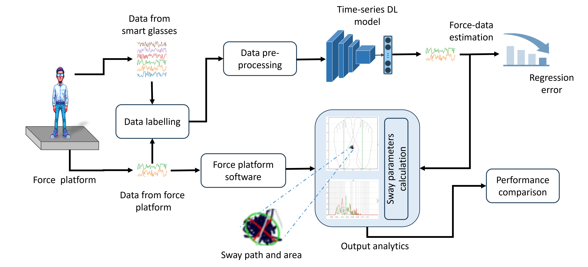
This diagram illustrates our approach for evaluating postural balance using smart glasses (IMU) and a force platform. IMU data is preprocessed and used to train deep learning models for force estimation. The system calculates sway parameters, enabling a comparison with ground-truth force platform measurements for clinical assessment and monitoring. View Paper
Postural Monitoring with Smart Glasses: Estimating CoP Trajectories Using Attention-Based CNN-BiLSTM
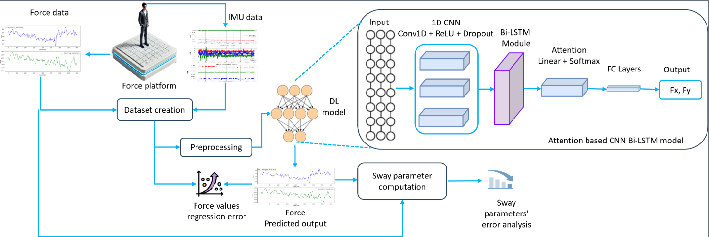
This figure presents the end-to-end framework for postural stability assessment using an IMU embedded in smart glasses and an attention-based deep learning model. Synchronized inertial signals and force platform measurements are preprocessed and segmented into time-series sequences for supervised model training and validation. The extracted features are fed into a neural network architecture incorporating temporal encoding and attention mechanisms to accurately estimate the center-of-pressure (CoP) trajectory. The predicted CoP is subsequently used to compute clinically relevant sway parameters, enabling quantitative evaluation of balance performance. The proposed system demonstrates a scalable and cost-effective alternative to conventional force platforms for continuous balance monitoring and rehabilitation applications. View Paper
Sentence-Level Classification Using Parallel Fuzzy Deep Learning Classifier
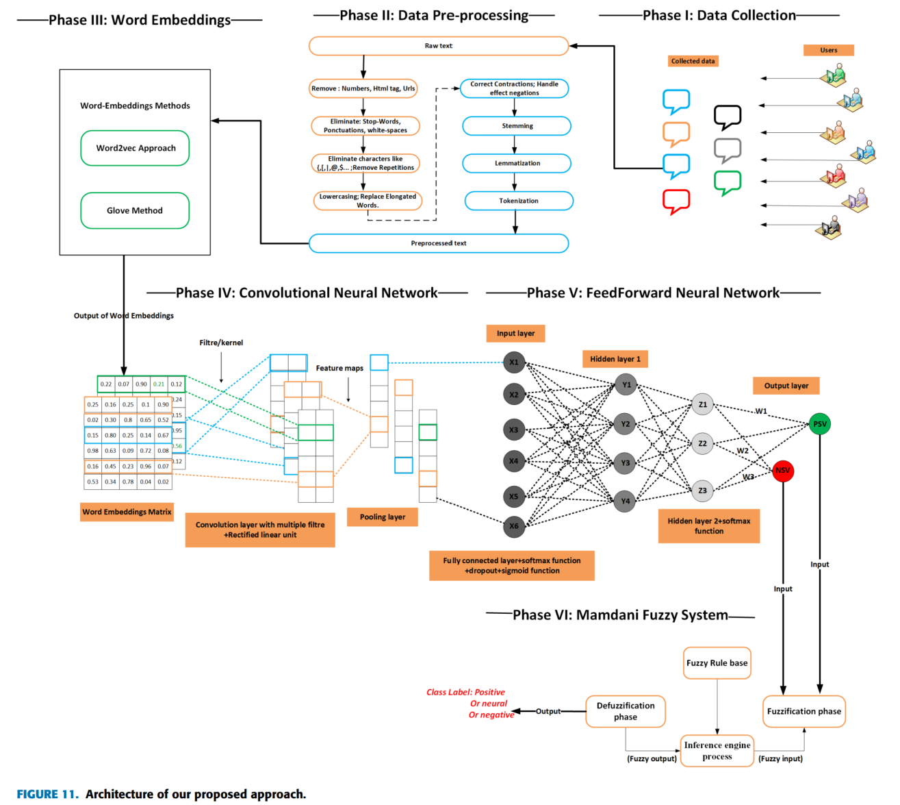
This figure illustrates the end-to-end architecture of the proposed parallel fuzzy deep learning classifier for sentence-level sentiment analysis. Raw user text is preprocessed and converted into word embeddings using Word2Vec and GloVe models. The embedded features are extracted through a convolutional neural network and refined using a feedforward neural network. Finally, a Mamdani fuzzy inference system integrates sentiment scores to generate the final classification label as positive, neutral, or negative. View Paper
A MapReduce Opinion Mining for COVID-19-Related Tweets Classification Using Enhanced ID3 Decision
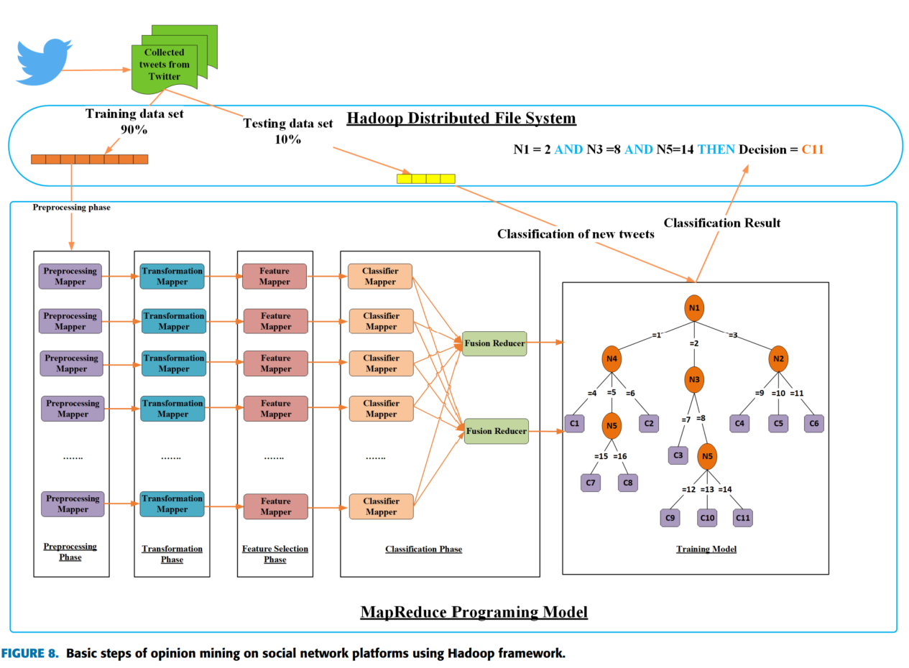
This figure presents a scalable opinion mining framework built on the Hadoop ecosystem for classifying large volumes of Twitter data. Tweets are collected, split into training and testing datasets, and processed through parallel MapReduce phases including preprocessing, transformation, feature extraction, and classification. Multiple classifier mappers operate in parallel, and their outputs are fused to generate the final sentiment decision using an enhanced ID3 decision tree. The architecture highlights efficient big-data processing, distributed storage (HDFS), and high-throughput sentiment classification for social media analytics. View Paper
Section B: IOT / Cybersecurity
Mitigating Cyber Attacks in LoRaWAN
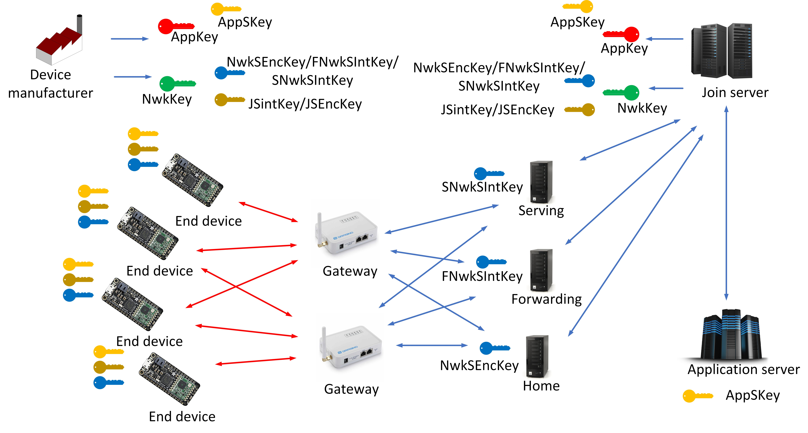
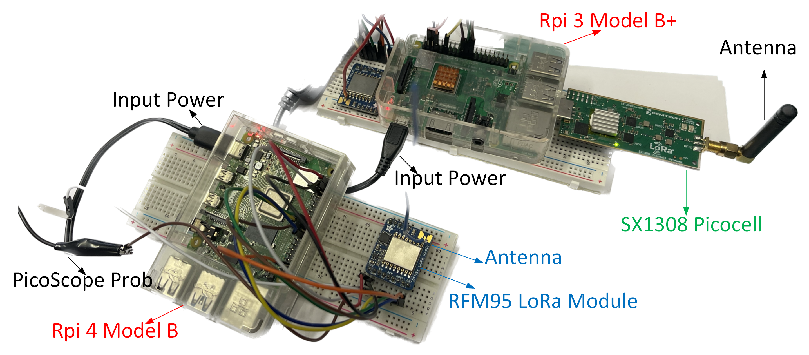
This diagram illustrates our approach for evaluating postural balance using smart glasses (IMU) and a force platform. IMU data is preprocessed and used to train deep learning models for force estimation. The system calculates sway parameters, enabling a comparison with ground-truth force platform measurements for clinical assessment and monitoring. View Paper
Towards Mobile Edge Computing: Taxonomy, Challenges, Applications and Future Realms
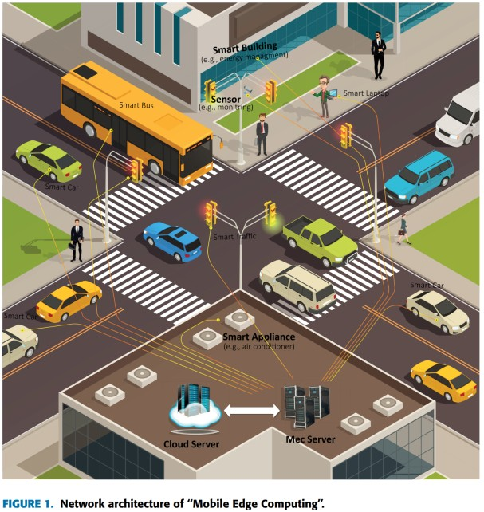
This figure illustrates the network architecture of a Mobile Edge Computing (MEC) ecosystem, where heterogeneous smart devices (e.g., vehicles, sensors, smart buildings, and appliances) generate data and offload computation to nearby MEC servers over the fronthaul network. The MEC layer performs low-latency processing and intermediate storage before forwarding selected workloads to centralized cloud servers through the backhaul link for large-scale computation and long-term storage. This hierarchical architecture reduces end-to-end latency, improves resource utilization, and enables real-time applications such as smart traffic management, IoT monitoring, and intelligent urban services. View Paper
Enhancing Cyber Security of LoRaWAN Gateways under Adversarial Attacks
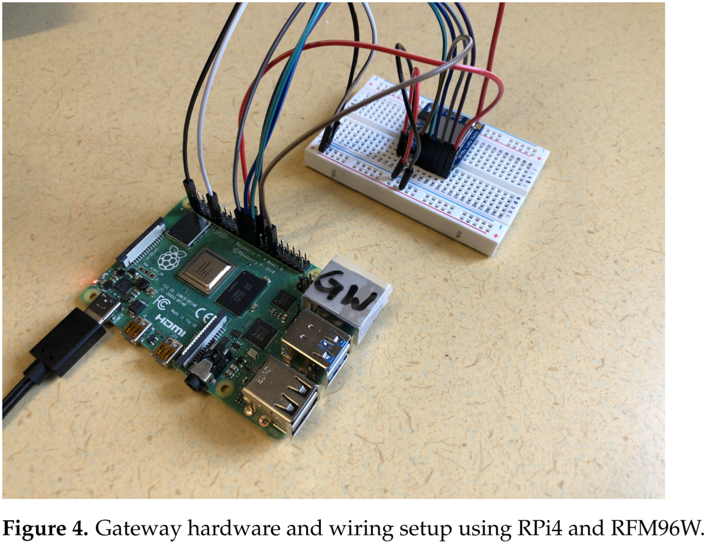
This figure shows the experimental gateway hardware setup using a Raspberry Pi 4 connected to an RFM96W LoRa transceiver via a breadboard and jumper wiring. The configuration represents a practical LoRaWAN gateway prototype used to evaluate secure communication and gateway authentication mechanisms under adversarial conditions, enabling controlled testing of packet forwarding, signal reliability, and cyber-attack mitigation in IoT networks.View Paper
Analysis of LPWAN: Cyber-Security Vulnerabilities and Privacy Issues in LoRaWAN, Sigfox, and NB-IoT
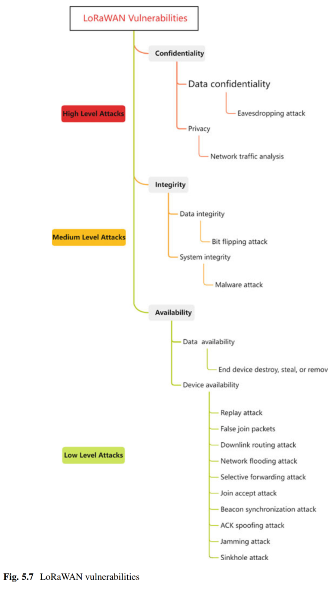
This figure visualizes the taxonomy of LoRaWAN security vulnerabilities classified according to the CIA triad: confidentiality, integrity, and availability. High-level threats target data confidentiality and privacy through eavesdropping and traffic analysis, medium-level threats compromise data and system integrity via bit-flipping and malware attacks, while low-level threats affect device and network availability through replay, jamming, flooding, sinkhole, and routing attacks. The diagram highlights the multi-layered risk landscape of LPWAN infrastructures and emphasizes the need for robust security mechanisms across all operational levels. View Paper
Towards Smart Sensing Systems: A New Approach to Environmental Monitoring Systems by Using LoRaWAN
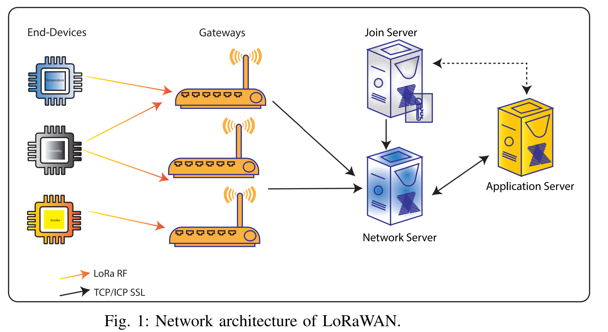
This figure illustrates the network architecture of a LoRaWAN-based IoT system, where distributed end devices equipped with environmental sensors transmit data to multiple gateways using LoRa radio links. The gateways forward the packets securely over IP networks to the network server and join server for device authentication, session management, and routing control, before delivering the data to the application server for storage, visualization, and analytics. The architecture enables long-range, low-power, and scalable sensing for real-time environmental monitoring applications. View Paper
Section C: Underwater Wireless Sensor Networks
Energy-Aware and Reliability-Based Localization-Free Cooperative Acoustic WSNs
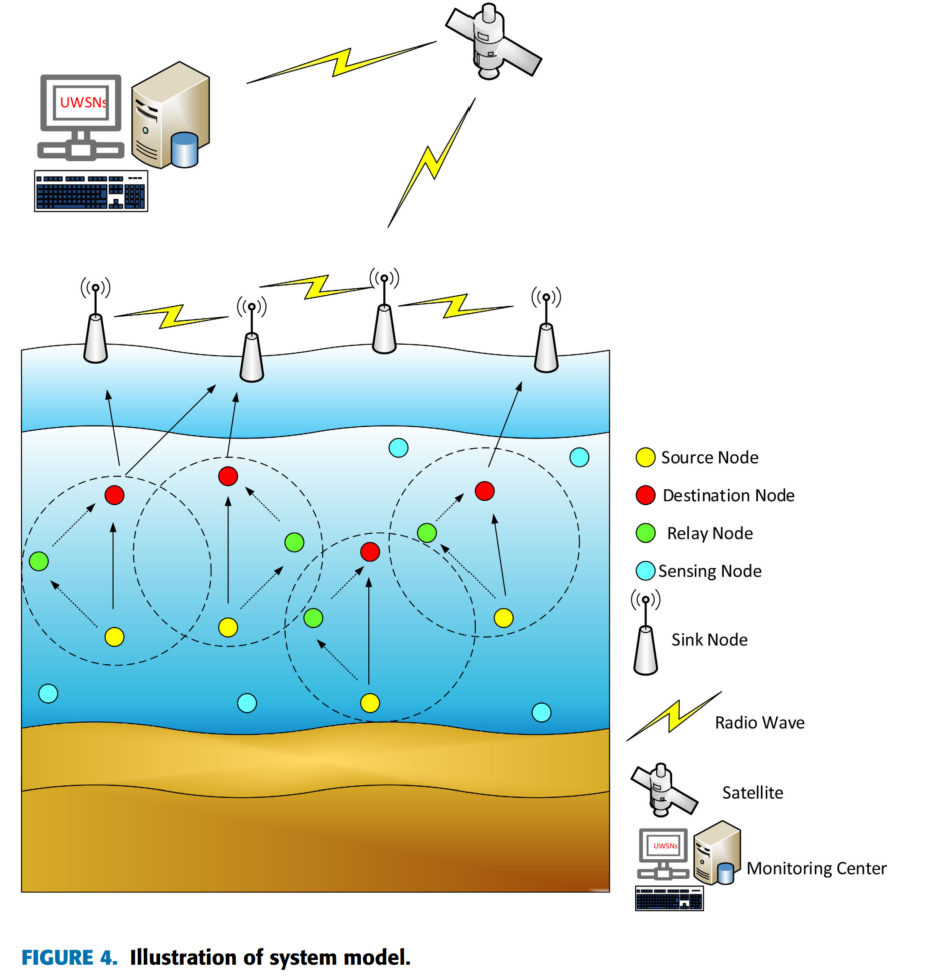
This figure illustrates the system model of a cooperative underwater wireless sensor network, where sensing nodes transmit data to destination nodes through energy-aware relay selection and multi-hop acoustic links. Clustered source, relay, and destination nodes cooperate to improve transmission reliability and reduce energy consumption in a dynamic underwater environment. Data collected by sink nodes is forwarded to surface gateways and relayed via satellite links to a monitoring center for centralized processing and supervision. The architecture enables robust, localization-free communication while balancing network lifetime, link reliability, and end-to-end data delivery performance. View Paper
Energy Balanced Localization-Free Cooperative Noise-Aware Routing Protocols for Underwater Wireless Sensor Networks
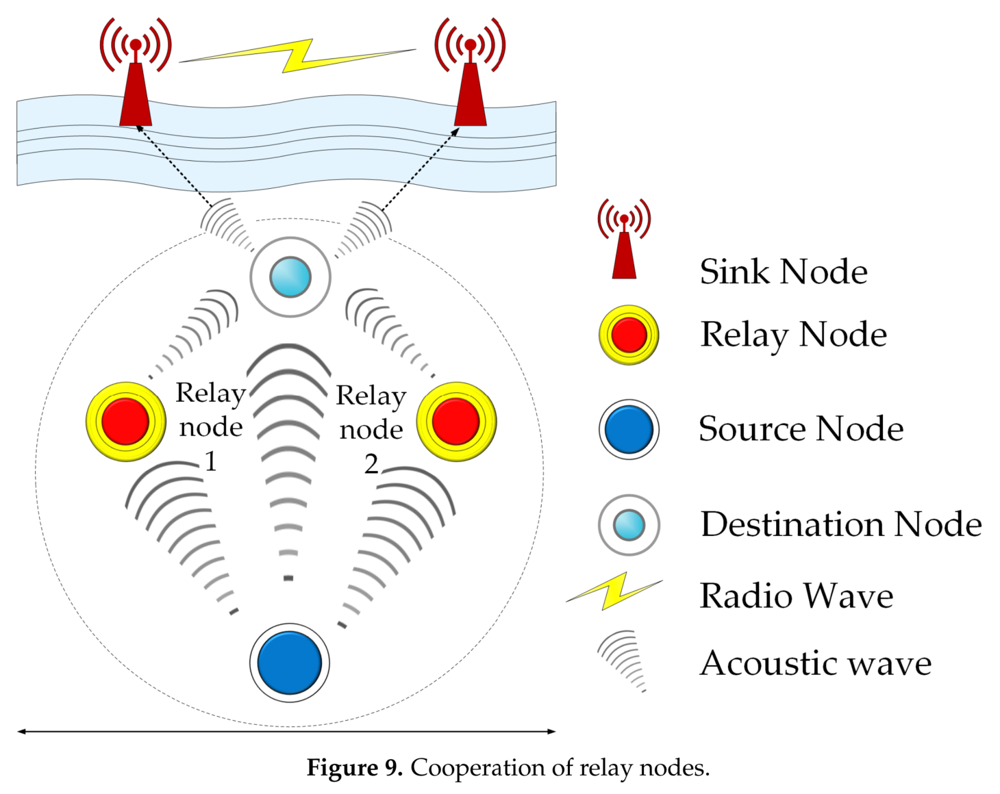
This figure illustrates the cooperative data forwarding mechanism in the Co-DNAR protocol for underwater wireless sensor networks. A source node transmits the same data packet directly to the destination node and simultaneously to two selected relay nodes using acoustic links. The relays amplify and forward the received signals toward the destination, resulting in multiple independent copies of the packet arriving through diverse paths. At the destination, maximum ratio combining (MRC) is applied to fuse the received signals and minimize the bit error rate, thereby improving transmission reliability in harsh underwater channel conditions while maintaining energy-aware and localization-free operation. View Paper
A Stable and Reliable Short-Path Routing Scheme for Efficient Acoustic Wireless Sensor Networks
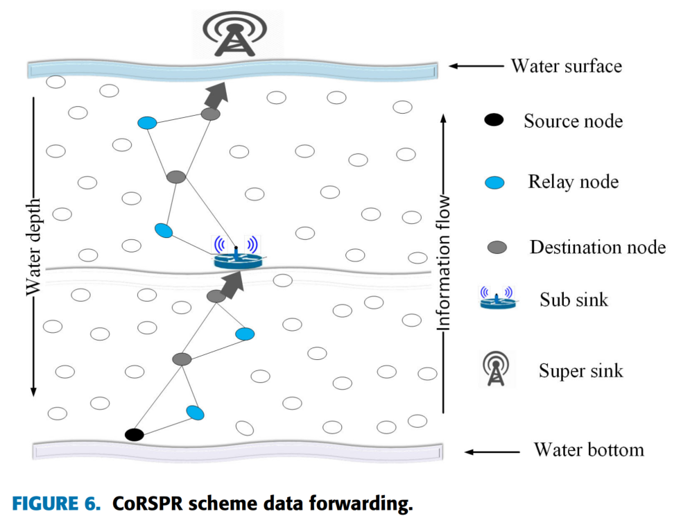
This figure illustrates the data forwarding process of the Cooperative Reliable Short-Path Routing (CoRSPR) scheme in an underwater acoustic wireless sensor network. A source node transmits data toward an optimal destination node while simultaneously selecting a single relay node based on a weighted function of residual energy, signal-to-noise ratio (SNR), distance, and hop count. If the destination detects high bit error rate, it requests cooperation from the relay, and the received packets are combined using a diversity technique before being forwarded to the sub-sink and subsequently to the super-sink at the water surface. The hierarchical forwarding structure reduces transmission distance, improves link reliability, balances energy consumption, and ensures stable and low-latency data delivery in dynamic underwater environments. View Paper
DNAR: Depth and Noise Aware Routing for Underwater Wireless Sensor Networks
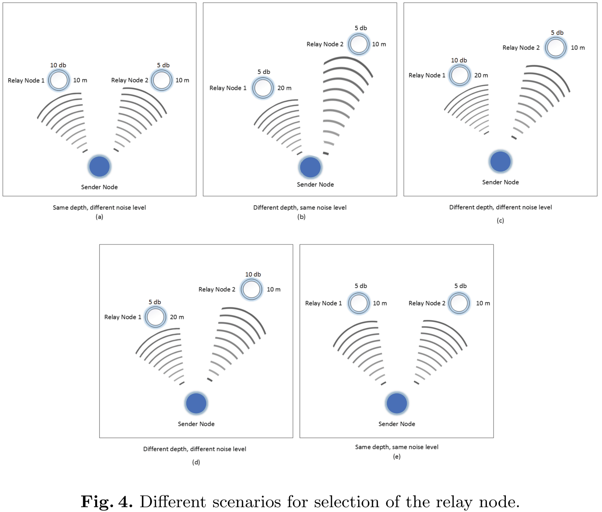
This figure illustrates different relay selection scenarios in the DNAR protocol, where a sender node chooses the optimal forwarder based on a joint evaluation of node depth and channel noise at the receiver. The subfigures depict cases with identical depths but different noise levels, identical noise levels but different depths, and combinations of varying depth and noise conditions. Using a weighted function that favors minimum depth and minimum channel noise, the protocol consistently selects the relay that provides lower attenuation and higher link reliability, ensuring that packets progress efficiently toward the surface sink without requiring localization information. This adaptive selection mechanism improves packet delivery ratio, balances energy consumption, and enhances network lifetime in dynamic underwater environments. View Paper
Public Code & Tools
I maintain several open-source repositories related to wearable sensing, IoT security, LoRaWAN analysis, and deep learning for biomedical applications. Selected tools and models developed during my Ph.D. and postdoctoral work are listed below.
Deep Learning Models for IMU → CoP Prediction
- LSTM, GRU, CNN–BiLSTM, and TCN–Attention neural architectures
- Dataset preprocessing pipelines for multi-sensor IMU recordings
- Explainable AI tools (Attention, SHAP, IG, fidelity masking)
LoRaWAN Security & Lightweight Cryptography
- Lightweight key-management scheme using AES-128, ECDH, and Argon2
- Scyther verification models for proving protocol security
- LoRaWAN packet analysis scripts for vulnerability testing
5G & Edge Computing Toolkit
- Secure NFV deployment templates for industrial IoT
- Edge-client data flow analysis tools (5G-INDUCE project)
- Latency-profiling scripts for virtualized functions
Underwater Wireless Sensor Networks (UWSNs)
- Simulation models for delay-minimization routing
- Energy-aware cooperative communication algorithms
GitHub Repositories
Below is an automatically generated list of my latest public GitHub projects: